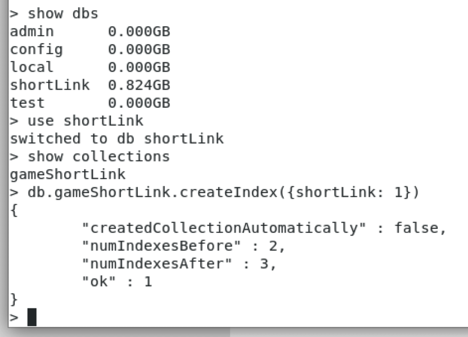
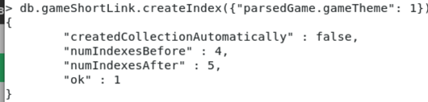
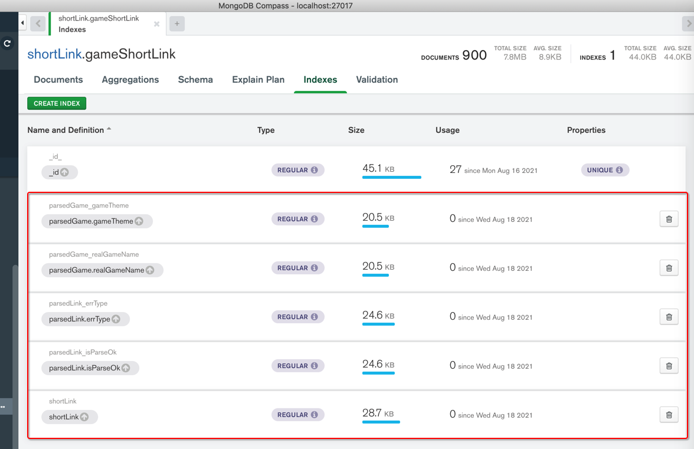
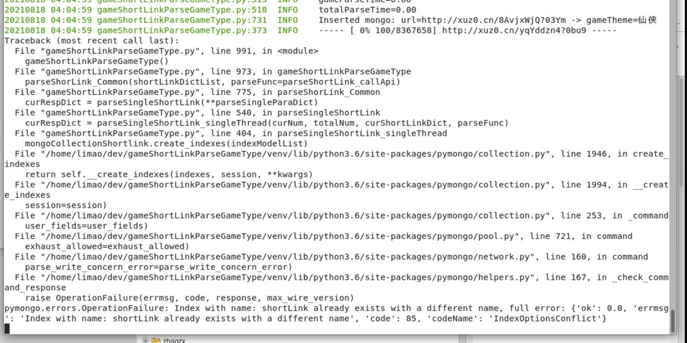
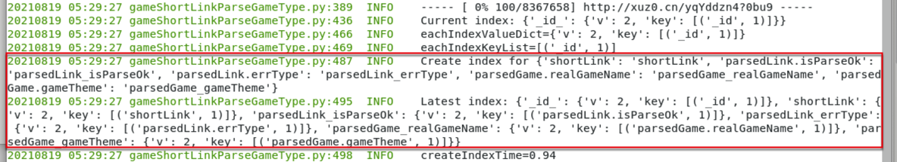
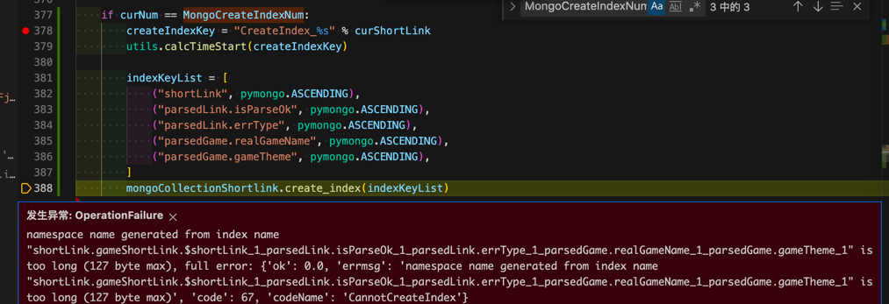

创建索引
数据举例：
{
"_id": { "$oid": "6114ce86447cece703d3e943" },
"parsedLink": {
"isParseOk": true,
。。。
},
"parsedGame": {
。。。
},
"realGameName": "绝世仙王",
"gameTheme": "仙侠",
"gamePlay": "动作"
},
"shortLink": "http://xuz0.cn/x13Xn7Sq?00KC",
"updateTime": "2021-08-12 15:32:12",
"input": {
。。。
"generateDate": "20210802"
}
}
Mongo shell
建索引
db.gameShortLink.createIndex({shortLink: 1})
举例：

给子字段建索引
举例：
db.gameShortLink.createIndex( { "parsedGame.realGameName": 1 } )
db.gameShortLink.createIndex( { "parsedGame.gameTheme": 1 } )

pymongo代码
相关官网文档：
- pymongo
一次性创建多个索引
如果确保，要创建的 索引没重复，则可以直接用
import pymongo
from pymongo import IndexModel
# from pymongo import ASCENDING, DESCENDING
indexShortLink = IndexModel([("shortLink", pymongo.ASCENDING)], name="shortLink")
indexIsParseOk = IndexModel([("parsedLink.isParseOk", pymongo.ASCENDING)], name="parsedLink_isParseOk")
indexErrType = IndexModel([("parsedLink.errType", pymongo.ASCENDING)], name="parsedLink_errType")
indexRealGameName = IndexModel([("parsedGame.realGameName", pymongo.ASCENDING)], name="parsedGame_realGameName")
indexGameTheme = IndexModel([("parsedGame.gameTheme", pymongo.ASCENDING)], name="parsedGame_gameTheme")
indexModelList = [
indexShortLink,
indexIsParseOk,
indexErrType,
indexRealGameName,
indexGameTheme,
]
mongoCollectionShortlink.create_indexes(indexModelList)
Compass（刷新后）中能看到添加的索引信息：

常见错误
errmsg code 85 codeName IndexOperationConflict
如果有重复索引，则会报错：

raise OperationFailure
pymongo.errors.OperationFailure
Index with name shortLink already exists with a different name, full error ok 0.0
errmsg code 85 codeName IndexOperationConflict
解决办法：先过滤掉已存在的，只创建不存在的
完整代码：
toCreateIndexKeyNameDict = {
"shortLink": "shortLink",
"parsedLink.isParseOk": "parsedLink_isParseOk",
"parsedLink.errType": "parsedLink_errType",
"parsedGame.realGameName": "parsedGame_realGameName",
"parsedGame.gameTheme": "parsedGame_gameTheme",
}
# Note: check existed to avoid:
# Index with name already exists with a different name full error
# and only create_index for not existed
curIndexDict = mongoCollectionShortlink.index_information()
logging.info("Current index: %s", curIndexDict)
# Current index: {'_id_': {'v': 2, 'key': [('_id', 1)], 'ns': 'shortLink.gameShortLink'}, 'shortLink': {'v': 2, 'key': [('shortLink', 1)], 'ns': 'shortLink.gameShortLink'}, 'parsedLink_isParseOk': {'v': 2, 'key': [('parsedLink.isParseOk', 1)], 'ns': 'shortLink.gameShortLink'}, 'parsedLink_errType': {'v': 2, 'key': [('parsedLink.errType', 1)], 'ns': 'shortLink.gameShortLink'}, 'parsedGame_realGameName': {'v': 2, 'key': [('parsedGame.realGameName', 1)], 'ns': 'shortLink.gameShortLink'}, 'parsedGame_gameTheme': {'v': 2, 'key': [('parsedGame.gameTheme', 1)], 'ns': 'shortLink.gameShortLink'}}
"""
{
"_id_": {
"v": 2,
"key": [
("_id", 1)
],
"ns": "shortLink.gameShortLink"
},
"shortLink": {
"v": 2, "key": [("shortLink", 1)], "ns": "shortLink.gameShortLink"
},
"parsedLink_isParseOk": {
"v": 2, "key": [("parsedLink.isParseOk", 1)], "ns": "shortLink.gameShortLink"
},
"parsedLink_errType": {
"v": 2, "key": [("parsedLink.errType", 1)], "ns": "shortLink.gameShortLink"
},
"parsedGame_realGameName": {
"v": 2, "key": [("parsedGame.realGameName", 1)], "ns": "shortLink.gameShortLink"
},
"parsedGame_gameTheme": {
"v": 2, "key": [("parsedGame.gameTheme", 1)], "ns": "shortLink.gameShortLink"
}
}
"""
allIndexKeyList = []
for _, eachIndexValueDict in curIndexDict.items():
logging.info("eachIndexValueDict=%s", eachIndexValueDict)
# eachIndexKey=_id_, eachIndexValueDict={'v': 2, 'key': [('_id', 1)], 'ns': 'shortLink.gameShortLink'}
eachIndexKeyList = eachIndexValueDict["key"]
logging.info("eachIndexKeyList=%s", eachIndexKeyList)
for eachIndexKeyName, _direction in eachIndexKeyList:
allIndexKeyList.append(eachIndexKeyName)
newIndexKeyNameDict = {}
for eachToCreateIndexKey, eachToCreateIndexName in toCreateIndexKeyNameDict.items():
if eachToCreateIndexKey in allIndexKeyList:
logging.info("Not create_index for existed index %s:%s ", eachToCreateIndexKey, eachToCreateIndexName)
isNeedReIndex = True
else:
newIndexKeyNameDict[eachToCreateIndexKey] = eachToCreateIndexName
newIndexModelList = []
for eachNewIndexKey, eachNewIndexName in newIndexKeyNameDict.items():
eachNewIndexModel = IndexModel([(eachNewIndexKey, pymongo.ASCENDING)], name=eachNewIndexName)
newIndexModelList.append(eachNewIndexModel)
if newIndexModelList:
logging.info("Create index for %s", newIndexKeyNameDict)
mongoCollectionShortlink.create_indexes(newIndexModelList)
# curIndexGenerator = mongoCollectionShortlink.list_indexes()
# for eachIndex in curIndexGenerator:
# logging.info("eachIndex=%s", eachIndex)
latestIndexDict = mongoCollectionShortlink.index_information()
logging.info("Latest index: %s", latestIndexDict)
输出：
20210819 01:14:02 gameShortLinkParseGameType.py:420 INFO Current index: {'_id_': {'v': 2, 'key': [('_id', 1)], 'ns': 'shortLink.gameShortLink'}, 'shortLink': {'v': 2, 'key': [('shortLink', 1)], 'ns': 'shortLink.gameShortLink'}, 'parsedLink_isParseOk': {'v': 2, 'key': [('parsedLink.isParseOk', 1)], 'ns': 'shortLink.gameShortLink'}, 'parsedLink_errType': {'v': 2, 'key': [('parsedLink.errType', 1)], 'ns': 'shortLink.gameShortLink'}}
20210819 01:14:02 gameShortLinkParseGameType.py:450 INFO eachIndexValueDict={'v': 2, 'key': [('_id', 1)], 'ns': 'shortLink.gameShortLink'}
20210819 01:14:02 gameShortLinkParseGameType.py:453 INFO eachIndexKeyList=[('_id', 1)]
20210819 01:14:02 gameShortLinkParseGameType.py:450 INFO eachIndexValueDict={'v': 2, 'key': [('shortLink', 1)], 'ns': 'shortLink.gameShortLink'}
20210819 01:14:02 gameShortLinkParseGameType.py:453 INFO eachIndexKeyList=[('shortLink', 1)]
20210819 01:14:02 gameShortLinkParseGameType.py:450 INFO eachIndexValueDict={'v': 2, 'key': [('parsedLink.isParseOk', 1)], 'ns': 'shortLink.gameShortLink'}
20210819 01:14:02 gameShortLinkParseGameType.py:453 INFO eachIndexKeyList=[('parsedLink.isParseOk', 1)]
20210819 01:14:02 gameShortLinkParseGameType.py:450 INFO eachIndexValueDict={'v': 2, 'key': [('parsedLink.errType', 1)], 'ns': 'shortLink.gameShortLink'}
20210819 01:14:02 gameShortLinkParseGameType.py:453 INFO eachIndexKeyList=[('parsedLink.errType', 1)]
20210819 01:14:09 gameShortLinkParseGameType.py:460 INFO Not create_index for existed index shortLink:shortLink
20210819 01:14:14 gameShortLinkParseGameType.py:460 INFO Not create_index for existed index parsedLink.isParseOk:parsedLink_isParseOk
20210819 01:14:17 gameShortLinkParseGameType.py:460 INFO Not create_index for existed index parsedLink.errType:parsedLink_errType
20210819 01:14:41 gameShortLinkParseGameType.py:471 INFO Create index for {'parsedGame.realGameName': 'parsedGame_realGameName', 'parsedGame.gameTheme': 'parsedGame_gameTheme'}
20210819 01:15:34 gameShortLinkParseGameType.py:479 INFO Latest index: {'_id_': {'v': 2, 'key': [('_id', 1)], 'ns': 'shortLink.gameShortLink'}, 'shortLink': {'v': 2, 'key': [('shortLink', 1)], 'ns': 'shortLink.gameShortLink'}, 'parsedLink_isParseOk': {'v': 2, 'key': [('parsedLink.isParseOk', 1)], 'ns': 'shortLink.gameShortLink'}, 'parsedLink_errType': {'v': 2, 'key': [('parsedLink.errType', 1)], 'ns': 'shortLink.gameShortLink'}, 'parsedGame_realGameName': {'v': 2, 'key': [('parsedGame.realGameName', 1)], 'ns': 'shortLink.gameShortLink'}, 'parsedGame_gameTheme': {'v': 2, 'key': [('parsedGame.gameTheme', 1)], 'ns': 'shortLink.gameShortLink'}}
线上服务器运行效果：

name generated from index name is too long 127 byte
此处没有给index加name，则导致默认生成的name太长而报错：
发生异常: OperationFailure
namespace name generated from index name "shortLink.gameShortLink.$shortLink_1_parsedLink.isParseOk_1_parsedLink.errType_1_parsedGame.realGameName_1_parsedGame.gameTheme_1" is too long (127 byte max), full error: {'ok': 0.0, 'errmsg': 'namespace name generated from index name "shortLink.gameShortLink.$shortLink_1_parsedLink.isParseOk_1_parsedLink.errType_1_parsedGame.realGameName_1_parsedGame.gameTheme_1" is too long (127 byte max)', 'code': 67, 'codeName': 'CannotCreateIndex'}

解决办法：改为create_indexes
代码：
indexShortLink = IndexModel([("shortLink", pymongo.ASCENDING)], name="shortLink")
indexIsParseOk = IndexModel([("parsedLink.isParseOk", pymongo.ASCENDING)], name="parsedLink_isParseOk")
indexErrType = IndexModel([("parsedLink.errType", pymongo.ASCENDING)], name="parsedLink_errType")
indexRealGameName = IndexModel([("parsedGame.realGameName", pymongo.ASCENDING)], name="parsedGame_realGameName")
indexGameTheme = IndexModel([("parsedGame.gameTheme", pymongo.ASCENDING)], name="parsedGame_gameTheme")
indexModelList = [
indexShortLink,
indexIsParseOk,
indexErrType,
indexRealGameName,
indexGameTheme,
]
mongoCollectionShortlink.create_indexes(indexModelList)
边运行pymongo代码，边建索引
- 之前：停止Python（的pymongo）代码运行，手动去
mongo shell中，建索引 - 现在：边运行（pymongo代码），边（通过pymongo代码）建索引
代码：
from pymongo import IndexModel
# from pymongo import ASCENDING, DESCENDING
if isProduction:
。。。
MongoCreateIndexNum = 100 # first time to create index of mongo
MongoReindexNumList = [ 500, 1000, 10000, 10*10000, 50*10000 ] # when some num, reindex
else:
。。。
MongoCreateIndexNum = 100 # first time to create index of mongo
MongoReindexNumList = [ 200, 300, 500 ] # when some num, reindex
。。。
isNeedReIndex = False
if curNum == MongoCreateIndexNum:
createIndexKey = "CreateIndex_%s" % curShortLink
utils.calcTimeStart(createIndexKey)
# indexKeyList = [
# ("shortLink", pymongo.ASCENDING),
# ("parsedLink.isParseOk", pymongo.ASCENDING),
# ("parsedLink.errType", pymongo.ASCENDING),
# ("parsedGame.realGameName", pymongo.ASCENDING),
# ("parsedGame.gameTheme", pymongo.ASCENDING),
# ]
# mongoCollectionShortlink.create_index(indexKeyList)
# indexShortLink = IndexModel([("shortLink", pymongo.ASCENDING)], name="shortLink")
# indexIsParseOk = IndexModel([("parsedLink.isParseOk", pymongo.ASCENDING)], name="parsedLink_isParseOk")
# indexErrType = IndexModel([("parsedLink.errType", pymongo.ASCENDING)], name="parsedLink_errType")
# indexRealGameName = IndexModel([("parsedGame.realGameName", pymongo.ASCENDING)], name="parsedGame_realGameName")
# indexGameTheme = IndexModel([("parsedGame.gameTheme", pymongo.ASCENDING)], name="parsedGame_gameTheme")
# indexModelList = [
# indexShortLink,
# indexIsParseOk,
# indexErrType,
# indexRealGameName,
# indexGameTheme,
# ]
# mongoCollectionShortlink.create_indexes(indexModelList)
toCreateIndexKeyNameDict = {
"shortLink": "shortLink",
"parsedLink.isParseOk": "parsedLink_isParseOk",
"parsedLink.errType": "parsedLink_errType",
"parsedGame.realGameName": "parsedGame_realGameName",
"parsedGame.gameTheme": "parsedGame_gameTheme",
}
# Note: check existed to avoid:
# Index with name already exists with a different name full error
# and only create_index for not existed
curIndexDict = mongoCollectionShortlink.index_information()
logging.info("Current index: %s", curIndexDict)
# Current index: {'_id_': {'v': 2, 'key': [('_id', 1)], 'ns': 'shortLink.gameShortLink'}, 'shortLink': {'v': 2, 'key': [('shortLink', 1)], 'ns': 'shortLink.gameShortLink'}, 'parsedLink_isParseOk': {'v': 2, 'key': [('parsedLink.isParseOk', 1)], 'ns': 'shortLink.gameShortLink'}, 'parsedLink_errType': {'v': 2, 'key': [('parsedLink.errType', 1)], 'ns': 'shortLink.gameShortLink'}, 'parsedGame_realGameName': {'v': 2, 'key': [('parsedGame.realGameName', 1)], 'ns': 'shortLink.gameShortLink'}, 'parsedGame_gameTheme': {'v': 2, 'key': [('parsedGame.gameTheme', 1)], 'ns': 'shortLink.gameShortLink'}}
"""
{
"_id_": {
"v": 2,
"key": [
("_id", 1)
],
"ns": "shortLink.gameShortLink"
},
"shortLink": {
"v": 2, "key": [("shortLink", 1)], "ns": "shortLink.gameShortLink"
},
"parsedLink_isParseOk": {
"v": 2, "key": [("parsedLink.isParseOk", 1)], "ns": "shortLink.gameShortLink"
},
"parsedLink_errType": {
"v": 2, "key": [("parsedLink.errType", 1)], "ns": "shortLink.gameShortLink"
},
"parsedGame_realGameName": {
"v": 2, "key": [("parsedGame.realGameName", 1)], "ns": "shortLink.gameShortLink"
},
"parsedGame_gameTheme": {
"v": 2, "key": [("parsedGame.gameTheme", 1)], "ns": "shortLink.gameShortLink"
}
}
"""
allIndexKeyList = []
for _, eachIndexValueDict in curIndexDict.items():
logging.info("eachIndexValueDict=%s", eachIndexValueDict)
# eachIndexKey=_id_, eachIndexValueDict={'v': 2, 'key': [('_id', 1)], 'ns': 'shortLink.gameShortLink'}
eachIndexKeyList = eachIndexValueDict["key"]
logging.info("eachIndexKeyList=%s", eachIndexKeyList)
for eachIndexKeyName, _direction in eachIndexKeyList:
allIndexKeyList.append(eachIndexKeyName)
newIndexKeyNameDict = {}
for eachToCreateIndexKey, eachToCreateIndexName in toCreateIndexKeyNameDict.items():
if eachToCreateIndexKey in allIndexKeyList:
logging.info("Not create_index for existed index %s:%s ", eachToCreateIndexKey, eachToCreateIndexName)
isNeedReIndex = True
else:
newIndexKeyNameDict[eachToCreateIndexKey] = eachToCreateIndexName
newIndexModelList = []
for eachNewIndexKey, eachNewIndexName in newIndexKeyNameDict.items():
eachNewIndexModel = IndexModel([(eachNewIndexKey, pymongo.ASCENDING)], name=eachNewIndexName)
newIndexModelList.append(eachNewIndexModel)
if newIndexModelList:
logging.info("Create index for %s", newIndexKeyNameDict)
mongoCollectionShortlink.create_indexes(newIndexModelList)
# curIndexGenerator = mongoCollectionShortlink.list_indexes()
# for eachIndex in curIndexGenerator:
# logging.info("eachIndex=%s", eachIndex)
latestIndexDict = mongoCollectionShortlink.index_information()
logging.info("Latest index: %s", latestIndexDict)
createIndexTime = utils.calcTimeEnd(createIndexKey)
logging.info("createIndexTime=%.2f", createIndexTime)
if curNum in MongoReindexNumList:
isNeedReIndex = True
if isNeedReIndex:
reindexKey = "Reindex_%s" % curShortLink
utils.calcTimeStart(reindexKey)
mongoDb.command({"reIndex": MongoCollectionName_gameShortLink})
reindexTime = utils.calcTimeEnd(reindexKey)
logging.info("reindexTime=%.2f", reindexTime)
实现了：
支持本地测试和在线运行
- 建索引
- 第一次，新建索引
- 第一次的时机：
number=100MongoCreateIndexNum = 100 # first time to create index of mongo
- 且判断是否已存在对应索引
- 已存在：跳过不新建
- 不存在：新建索引
- 如果有已存在的，则重新
reIndex
- 第一次的时机：
- 之后每隔一段，重建索引：
reIndex- 具体间隔是：
MongoReindexNumList = [ 500, 1000, 10000, 10*10000, 50*10000 ] # when some num, reindex
- 具体间隔是：
- 第一次，新建索引
常见问题
创建索引，是否后台运行？
创建索引，默认前台=Forground运行
如果希望后台运行，可以加参数：
my_collection.create_index([("mike", pymongo.DESCENDING)], background=True)
关于选后台还是前台：
- 数据量很大：保险起见，还是前台运行
- 数据量不是很大：可以考虑后台运行
官网文档：